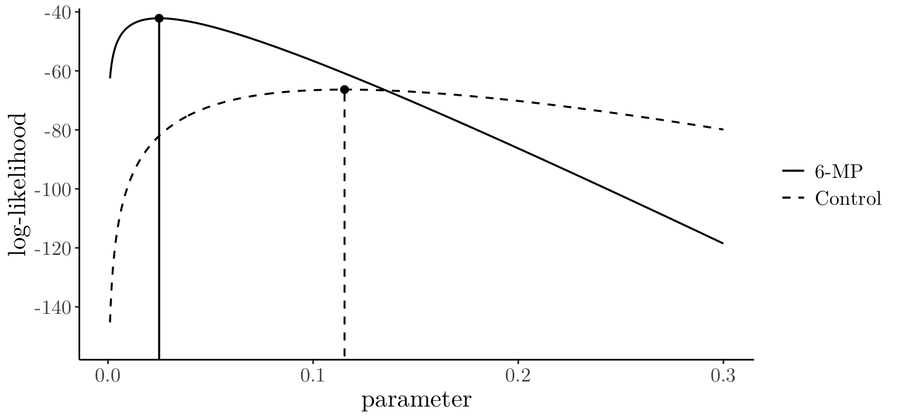

[1] 1.645[1] 1.96[1] 2.576Chapter 5: Survival models: parameter estimation
09/10/2025
In the last chapter, we
Reviewed Key Parametric Distributions: we focused on the Exponential, Weibull, Log-Logistic, LogNormal, and Gompertz (and Makeham in PC 1) distributions, which all have a non-negative domain suitable for modeling time \(T\).
Interpreted the different hazard function shapes \(h_T\) for each distribution.
Established the critical relationship between the Exponential and Weibull distributions, as well as their transformations.
We start by considering models for a homogenous population of survival times, from which we have observed a sample \(\mathbf{t} = \left(t_1,\dots t_n\right)\).
Some of the observations may be censored.
Let \(d_1,\cdots ,d_n\) be a set of censoring indicators, with
\[ d_i=\left\{\begin{array}{ll} 0&{\rm unit~}i{\rm~was~censored~at~}t_i{\rm~so~actual~failure ~time~}>t_i\\ 1&{\rm failure~of~unit~}i{\rm~was~observed~at~}t_i\end{array}\right. \]Therefore \(t_1, \cdots, t_n\) are (possibly censored) observations of i.i.d. random variables \(\mathbf{T} = \left(T_1,\cdots,T_n\right) \equiv T\).
A parametric model for \(T\) specifies the p.d.f \(f_T\), apart from the values of a (small) number of unknown parameters, which we denote by \(\boldsymbol{\theta}\).
For example, for a Weibull model, \(\boldsymbol{\theta}\) comprises the shape and scale parameters \(\alpha\) and \(\beta\), i.e. \(\boldsymbol{\theta} = (\alpha,\beta)\).
We write \(f_T(t;\boldsymbol{\theta})\) to recognise the dependence of the p.d.f. \(f_T\) on \(\boldsymbol{\theta}\).
Similarly, for the survivor \(S_T(t;\boldsymbol{\theta})\) and hazard \(h_T(t;\boldsymbol{\theta})\) functions on \(\boldsymbol{\theta}\).
Estimating the distribution of \(T\) then simply involves estimating \(\boldsymbol{\theta}\).
Once we have an estimate \(\hat{\boldsymbol{\theta}}\) of \(\boldsymbol{\theta}\), we can obtain the corresponding estimates \(S_T(t;\hat{\boldsymbol{\theta}})\) and \(h_T(t;\hat{\boldsymbol{\theta}})\) of the survival and hazard functions.
Typically, we use maximum likelihood estimation to obtain \(\hat{\boldsymbol{\theta}}\) in a parametric model.
Maximum likelihood estimation is a general method for parameter estimation with many good properties (see MATH3044 for more).
Initially consider a scalar parameter \(\theta\).
The maximum likelihood estimator (MLE) \(\hat{\theta}\) maximises the likelihood \(L(\theta)\).
The likelihood \(L(\theta)\) is simply the joint probability (density) of the observed data, treated as a function of the unknown \(\theta\).
The likelihood \(L(\theta)\) is simply the joint probability (density) of the observed data, treated as a function of the unknown \(\theta\).
Assuming i.i.d. observations with no censoring \[ L(\theta)=\prod_{i=1}^n f_T(t_i;\theta), \] as the joint PDF of independent variables is just the product of their individual (marginal) PDFs.
For a right censored observation, \(t_i\) is not an observed value of \(T_i\), but an interval \((t_i, \infty)\) for \(T_i\).
Hence, the appropriate contribution to the likelihood for a censored \(t_i\) is not \(f_T(t_i;\theta)\), but rather \(\mathbb{P}(T_i>t_i)=S_T(t_i)\).
Assuming i.i.d. observations with (right) censoring indicators \(d_1,\cdots ,d_n\), \[ L(\theta)=\prod_{i:d_i=1} f_T(t_i;\theta)\prod_{i:d_i=0} S_T(t_i;\theta) \]
This is a product of two terms: one for the exact observations and one for the censored observations.
Let \(d_i\), \(c_{\text{right},i}\), \(c_{\text{left},i}\), and \(c_{\text{interval},i}\) be a set of four indicators for the \(i\)-th observation, where exactly one is equal to \(1\), and the others are \(0\).
| Indicator | Condition | Contribution |
|---|---|---|
| \(d_i\) | Failure was observed at \(t_i\). | \(f_T(t_i;\theta)\) |
| \(c_{\text{right},i}\) | Unit was right-censored at \(t_i\). | \(S_T(t_i;\theta)\) |
| \(c_{\text{left},i}\) | Unit was left-censored at \(t_i\). | \(F_T(t_i;\theta)\) |
| \(c_{\text{interval},i}\) | Unit was interval-censored on \((t_{1,i}, t_{2,i})\). | \(S_T(t_{1,i};\theta) - S_T(t_{2,i};\theta)\) |
Assuming i.i.d. observations, the complete likelihood function is
\[ L(\theta) = \prod_{i:d_i=1} f_T(t_i;\theta) \prod_{i:c_{\text{right},i}=1} S_T(t_i;\theta) \prod_{i:c_{\text{left},i}=1} F_T(t_i;\theta) \prod_{i:c_{\text{interval},i}=1} \left[S_T(t_{1,i};\theta) - S_T(t_{2,i};\theta)\right]. \]
Usually, it is easier to maximise the log-likelihood \(\ell(\theta)=\log L(\theta)\).
For large samples, we have the asymptotic approximation (not proved here) \[
\hat{\theta}\;\;\stackrel{\text{approx.}}{\sim}\; \text{Normal}(\theta, I(\theta)^{-1}),
\] where \[
I(\theta)=\mathbb{E}\left[-\frac{\partial^2}{\partial\theta^2} \ell(\theta)\right]
\] is called the Fisher information. A multi-parameter extension of this result exists but is outside the scope of this module (you will see that in MATH3044).
In large samples, the MLE is approximately unbiased, and we can construct \(100(1-\alpha)\%\) confidence intervals as \[
\hat{\theta}\pm z_{\left(1-\frac{\alpha}{2}\right)} \cdot \text{se}(\hat{\theta})
\] where \(\text{se}(\hat{\theta})\), the standard error, is given by \[
\text{se}(\hat{\theta})=\left[I(\hat{\theta})^{-1}\right]^{\frac{1}{2}}
\] and \(z_{\left(1-\frac{\alpha}{2}\right)}\) is the \(\left(1-\frac{\alpha}{2}\right)\)-th quantile of the standard normal (computed, e.g., using R).
These quantiles can be numerically calculated using the R function qnorm(). For instance, for \(\alpha= 0.1\), \(\alpha = 0.05\) and \(\alpha = 0.01\).
which would be needed for \(90\%\), \(95\%\) and \(99\%\) confidence intervals, respectively.
Suppose that we want to fit an exponential model to our data, so \[ \begin{eqnarray*} L(\beta)&=&\prod_{i:d_i=1} f_T(t_i;\beta)\prod_{i:d_i=0} S_T(t_i;\beta)\\[5pt] &=&\prod_{i:d_i=1} \beta\exp\left(-\beta t_i\right)\prod_{i:d_i=0} \exp\left(-\beta t_i\right)\\[5pt] &=&\beta^{d_+}\exp\left(-\beta \sum_{i=1}^n t_i\right), \end{eqnarray*} \] where \(d_+=\sum_{i=1}^n d_i\) is the number of uncensored observations.
Therefore, the log-likelihood is \[ \ell(\beta)= d_+\log \beta - \beta \sum_{i=1}^n t_i. \]
The MLE for \(\beta\) in the exponential model maximises \(\ell(\beta)\) and therefore solves \[ 0\;\;=\;\;\frac{\partial}{\partial\beta} \ell(\beta)\;\;=\;\; \frac{d_+}{\beta} - \sum_{i=1}^n t_i. \] Thus, \[ \frac{d_+}{\hat{\beta}}= \sum_{i=1}^n t_i \qquad\Rightarrow\qquad \hat\beta=\frac{d_+}{\sum_{i=1}^n t_i}. \] so \(\hat{\beta}\) is the number of uncensored observations divided by the sum of the (censored and observed) survival times.
The second derivative of the log-likelihood is \[ \frac{\partial^2}{\partial\beta^2} \ell(\beta)\;\;=\;\; - \frac{d_+}{\beta^2}. \]
The Fisher information is \[ \begin{eqnarray*} I(\beta) & = & \mathbb{E} \left( - \frac{\partial^2}{\partial\beta^2} \ell(\beta) \right)\\ & = & \mathbb{E} \left( \frac{d_+}{\beta^2}\right) \approx \frac{d_+}{\beta^2}, \end{eqnarray*} \] where \(\mathbb{E}(d_+) = d_+\) is assumed to be \(d_+\) (plug-in approximation).
Therefore, for the Exponential model, the standard error is \[ \begin{eqnarray*} \text{se}(\hat{\beta}) & = & \left[ I(\hat{\beta})^{-1} \right]^{\frac{1}{2}} = \frac{\hat{\beta}}{\sqrt{d_+}}. \end{eqnarray*} \]
Using a Normal approximation, a \(100(1 - \alpha)\%\) confidence interval is \[ \hat{\beta} \pm z_{\left(1-\frac{\alpha}{2}\right)} \cdot \frac{\hat{\beta}}{\sqrt{d_+}}. \]
Remission times (before relapsing), in weeks, from a clinical trial of 42 leukaemia patients. Patients matched in pairs and randomised to 6-mercaptopurine (drug) or control. In R, data is found in the MASS package in the gehan object.
# A tibble: 42 × 4
pair time cens treat
<int> <int> <int> <fct>
1 1 1 1 control
2 1 10 1 6-MP
3 2 22 1 control
4 2 7 1 6-MP
5 3 3 1 control
6 3 32 0 6-MP
7 4 12 1 control
8 4 23 1 6-MP
9 5 8 1 control
10 5 22 1 6-MP
# ℹ 32 more rowsWe fit exponential models separately to the treatment and control groups.
6-MP treatment group [1] 10 7 32 23 22 6 16 34 32 25 11 20 19 6 17 35 6 13 9 6 10 [1] 1 1 0 1 1 1 1 0 0 0 0 0 0 1 0 0 1 1 0 0 0 n1 d1 beta1 se1
1 21 9 0.02507 0.008357control treatment group [1] 1 22 3 12 8 17 2 11 8 12 2 5 4 15 8 23 5 11 4 1 8 [1] 1 1 1 1 1 1 1 1 1 1 1 1 1 1 1 1 1 1 1 1 1 n2 d2 beta2 se2
1 21 21 0.1154 0.02518For the 6-MP treatment group, \(n=21\), \(d_+=9\), and \(\sum_{i=1}^n t_i=359\), so \[
\hat\beta=\frac{9}{359} = 0.025 \qquad{\rm~and~}\qquad \text{se}(\hat{\theta})=\frac{0.025}{\sqrt{9}} =0.08
\] For the control treatment group, \(n=21\), \(d_+=21\) and \(\sum_{i=1}^n t_i=182\), so \[
\hat\beta=\frac{21}{182} = 0.115 \qquad{\rm~and~}\qquad \text{se}(\hat{\beta})=\frac{0.115}{\sqrt{21}} = 0.025
\] Assuming this model, approximate \(95\%\) confidence intervals for \(\beta\) are
6-MP[1] "[0.009, 0.041]"control groupThe plot below shows the log-likelihood curves for both groups (6-MP and control).
beta_seq <- seq(from = 0.001, to = 0.3, length.out = 1000)
loglik1 <- loglik2 <- rep(0, 1000)
for (b in 1:1000) { loglik1[b] <- d1 * log(beta_seq[b]) - sum(t1) * beta_seq[b]; loglik2[b] <- d2 * log(beta_seq[b]) - sum(t2) * beta_seq[b] }
df_loglik <- data.frame(beta = beta_seq, group1 = loglik1, group2 = loglik2) %>% tidyr::pivot_longer(cols = c(group1, group2), names_to = "Group", values_to = "loglik")
ggplot(df_loglik, aes(x = beta, y = loglik, linetype = Group)) + geom_line(linewidth = 0.6) +
geom_segment(data = . %>% group_by(Group) %>% filter(loglik == max(loglik)), aes(x = beta, xend = beta, y = -200, yend = loglik, linetype = Group), color = "black", linewidth = 0.6, inherit.aes = FALSE) +
geom_point( data = . %>% group_by(Group) %>% filter(loglik == max(loglik)), aes(x = beta, y = loglik), size = 2, inherit.aes = FALSE) +
labs(x = "parameter", y = "log-likelihood") +
scale_linetype_manual(values = c("group1" = "solid", "group2" = "dashed"), name = NULL, labels = c("6-MP", "Control")) +
theme_bw() + theme(legend.position = "right", panel.grid.major = element_blank(), panel.grid.minor = element_blank(), axis.line = element_line(color = "black"), panel.border = element_blank(), text = element_text(size = 16, family = "Latin Modern Roman 10")) + coord_cartesian(ylim = c(min(df_loglik$loglik, na.rm = TRUE) * 1.05, max(df_loglik$loglik, na.rm = TRUE) * 1.05))
For a \(\text{Weibull}(\alpha,\beta)\) model, \[
\begin{eqnarray*}
L(\alpha,\beta)&=&\prod_{i:d_i=1} f_T(t_i;\alpha,\beta)\prod_{i:d_i=0} S_T(t_i;\alpha,\beta)\\[5pt]
&=&\prod_{i:d_i=1} \alpha\beta \left(\beta t \right)^{\alpha-1}\exp\left\{ - \left(\beta t \right)^{\alpha}\right\} \prod_{i:d_i=0}
\exp\left\{ - \left(\beta t \right)^{\alpha}\right\}\\[5pt]
&=& \alpha^{d_+} \beta^{\alpha d_+} \left( \prod_{i:d_i=1} t_i \right)^{\alpha-1} \exp \left( - \sum_{i=1}^n \left(\beta t_i\right)^{\alpha} \right).
\end{eqnarray*}
\] Therefore, \[
\ell(\alpha,\beta)= d_+ \log \alpha +\alpha d_+ \log \beta +(\alpha - 1) \sum_{i:d_i=1} \log t_i - \beta^\alpha \sum_{i=1}^n t_i^\alpha.
\] Requires numerical solution of \(\frac{\partial\ell}{\partial\alpha}=0,\;\frac{\partial\ell}{\partial\beta}=0\) (use R or similar).
# Example data
t <- c(2.3, 1.8, 3.2, 2.5, 4.1, 1.2, 3.5, 2.9, 1.6, 3.8)
d <- c(1, 0, 1, 1, 0, 1, 1, 0, 1, 1) # 1 = observed, 0 = censored
# Log-likelihood for a Weibull model
loglik_weibull_cens <- function(par, t, d) {
alpha <- par[1]
beta <- par[2]
if (alpha <= 0 || beta <= 0) return(-Inf) # Enforce positivity
d_plus <- sum(d)
term1 <- d_plus * log(alpha)
term2 <- alpha * d_plus * log(beta)
term3 <- (alpha - 1) * sum(log(t[d == 1]))
term4 <- (beta^alpha) * sum(t^alpha) * (-1)
ll <- term1 + term2 + term3 + term4
return(ll)
}
# Numerical maximisation
fit_manual <- optim(par = c(1, 0.5),
fn = function (par) { -loglik_weibull_cens(par, t, d)},
method = "L-BFGS-B", lower = c(1e-6, 1e-6))
fit_manual[c("par", "value")]$par
[1] 3.0173 0.2985
$value
[1] 12.4Now, let’s fit the same model using the flexsurvreg() from the flexsurv package (more about it later).
library("flexsurv")
fit_flex <- flexsurvreg(Surv(t, d) ~ 1, dist = "weibull")
# Extract shape and scale
alpha_hat_flex <- fit_flex$res["shape", "est"]
scale_hat_flex <- fit_flex$res["scale", "est"]
# Convert to our parameterisation
beta_hat_flex <- 1 / scale_hat_flex
c(alpha_hat_flex = alpha_hat_flex, beta_hat_flex = beta_hat_flex)alpha_hat_flex beta_hat_flex
3.0173 0.2985 [1] -12.4Notice that flexsurvreg() uses a different parameterisation (same as dweibull(); see doc. page 25). In particular, as in ?dweibull, the density of \(\text{Weibull}(\text{shape = }a, \text{scale = }\sigma)\) is \[
f(x)=(a/\sigma)(x/\sigma)^{a−1}\exp(−(x/\sigma)^a).
\]